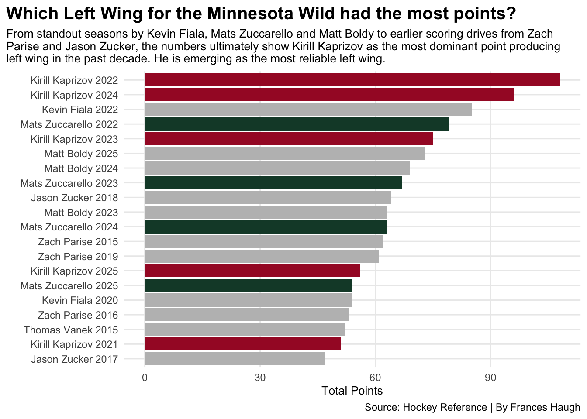
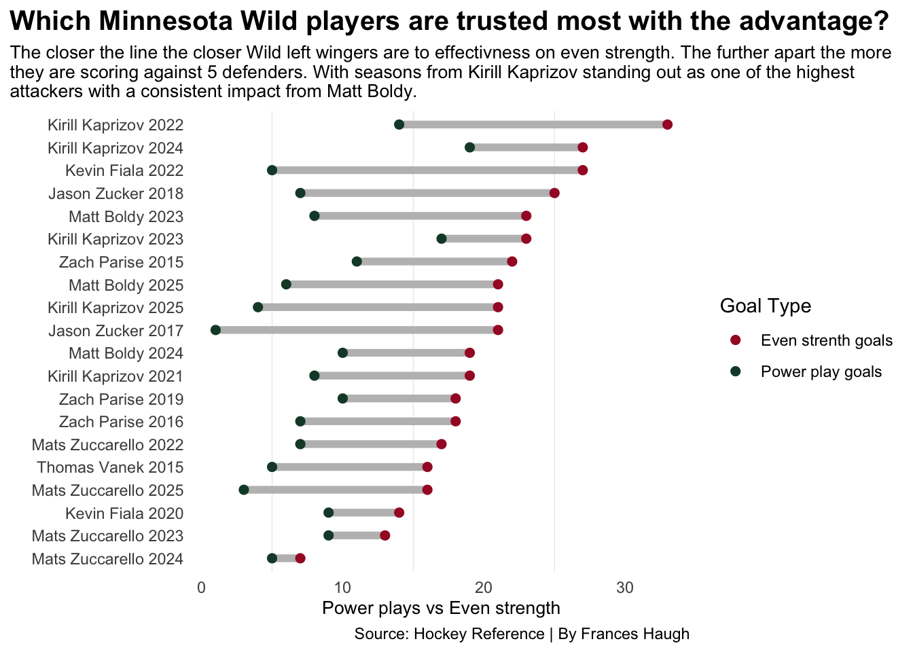
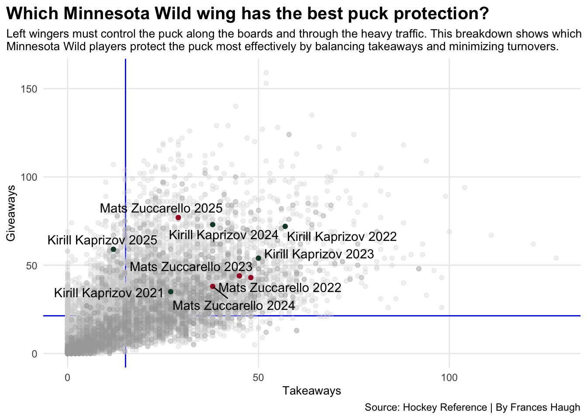

Who has been the best left wing for the Minnesota Wild in the past decade?
leftwing
nhl
minnesotawild
Author
Frances Haugh
Published
April 10, 2026
Hockey fans can debate which players truly drive the offense. Goals and assists get the attention but when you watch closely you see some positions consistently producing more scoring opportunities than others. You see the highlight plays, but do you notice how often many highlight plays come from the same position.
One key offensive player is the left wing.
Left wingers are responsible for generating offense, creating goal scoring opportunities and finding the center forward. Left wingers use their speed, position and shooting ability to tilt the ice in their teams favor.
But when you look specifically at the Minnesota Wild who is a team with great star left wingers, who is that name that stands out the most?
That is what we are working to solve.
Zach Parise is a name widely known in the Minnesota hockey community as one of the “best”. But have there been better players since his time with the Minnesota Wild?
Let’s look at their numbers.
Using Hockey Reference it allows us to view all types of statistics for all players. From there we can show the difference in each player’s points with each season they have been with the Wild, along with who you want on the ice during a power play or an even strength play. Finding who can keep the puck the most and who tends to lose the puck more.
The question to answer is who in the past 10 years has helped the Minnesota Wild the most out of the left wingers?
Code
library(tidyverse)library(ggrepel)hockey <-read_csv("nhl_players_skater_stats_15_25 (1).csv")wild <- hockey |>filter(team =="MIN")position <- wild |>filter(pos =="LW") |>top_n(20, wt=pts)kk <- position |>filter(player =="Kirill Kaprizov")mz <- position |>filter(player =="Mats Zuccarello")ggplot() +geom_bar(data=position, aes(x=reorder(player_season, pts), weight = pts), fill="grey") +geom_bar(data=kk, aes(x=reorder(player_season, pts), weight = pts), fill="#A6192E") +geom_bar(data=mz, aes(x=reorder(player_season, pts), weight = pts), fill="#154734") +coord_flip() +labs(title="Which Left Wing for the Minnesota Wild had the most points?", subtitle ="From standout seasons by Kevin Fiala, Mats Zuccarello and Matt Boldy to earlier scoring drives from Zach\nParise and Jason Zucker, the numbers ultimately show Kirill Kaprizov as the most dominant point producing\nleft wing in the past decade. He is emerging as the most reliable left wing.", caption="Source: Hockey Reference | By Frances Haugh",y ="Total Points", x ="") +theme_minimal() +theme(plot.title =element_text(size =15, face ="bold"), axis.title =element_text(size =10),plot.subtitle =element_text(size=10),panel.grid.minor =element_blank(),plot.title.position ="plot" )

Kirill Kaprizov in his 2022 season with the Minnesota Wild had the most points. Kaprizov shows up on the chart 5 times out of the top 20 left wingers, along with being 3 of the top 10. In Kaprizov’s 2022 season he had a total of 108 points. The lowest season was in 2021 when he had a total of 51 points.
When you factor in the amount of games he played each season the points come into play. In his 2022 season he played 81 games when he had the most total points. In his lowest season in 2021 he played 55 games.
Mats Zuccarello is another name that stands out with the Minnesota Wild, 4 out of 20 to be exact. His top season being 4th total was in 2022 when he had 79 total points. The 79 total points has been within 70 games which is his second highest season of games played.
Although points don’t entirely dictate the “best” left winger for the Wild it is a start.
Code
ggplot() +geom_segment(data=position, aes(y=reorder(player_season, evg), yend=player_season,x=evg, xend=ppg),color="grey",linewidth =2, ) +geom_point(data=position,aes(y=player_season,x=evg,color="Even strenth goals" ),size=2 ) +geom_point(data=position,aes(y=player_season,x=ppg, color="Power play goals" ),size=2 ) +scale_color_manual(name="Goal Type", values=c("#A6192E", "#154734")) +labs(title="Which Minnesota Wild players are trusted most with the advantage?", subtitle ="The closer the line the closer Wild left wingers are to effectivness on even strength. The further apart the more\nthey are scoring against 5 defenders. With seasons from Kirill Kaprizov standing out as one of the highest\nattackers with a consistent impact from Matt Boldy.",caption="Source: Hockey Reference | By Frances Haugh",y ="", x ="Power plays vs Even strength") +theme_minimal() +theme(legend.position ="right",panel.grid.major =element_blank(),plot.title =element_text(size =15, face ="bold"), axis.title =element_text(size =10),plot.subtitle =element_text(size=10),plot.title.position ="plot" )

Power plays are when you want your strongest skaters on the ice. But who do the Wild want on the ice during their power plays? Who do they want on the ice when they are on even strength?
The answer is Kirill Kaprizov. Kaprizov is the man you want on the ice when you are at an advantage or even strength. His even strength goals are significantly higher than many other wingers. When you see his power play goals, it is still all about him. The top 3 highest power play goals scored were by Kaprizov in his 2022, 2023 and 2024 season. He is the skater who can find the back of the net on an advantage or at even strength.
His name continues to pop up.
Code
leftwings <- hockey |>filter(pos =="LW")givers <- hockey |>filter(give >140)takers <- hockey |>filter(take >120)labels <-bind_rows(kk, mz)ggplot() +geom_vline(xintercept =15.16551, color="blue") +geom_hline(yintercept =21.36749, color="blue") +geom_point(data=hockey, aes(x=take, y=give), color="lightgrey", alpha=.3) +geom_point(data=leftwings, aes(x=take, y=give), color="darkgrey", alpha=.3) +geom_point(data=kk, aes(x=take, y=give), color="#154734") +geom_point(data=mz, aes(x=take, y=give), color="#A6192E") +geom_text_repel(data= labels, aes(x=take, y=give, label=player_season))+theme_minimal() +labs(title="Which Minnesota Wild wing has the best puck protection?", subtitle ="Left wingers must control the puck along the boards and through the heavy traffic. This breakdown shows which\nMinnesota Wild players protect the puck most effectively by balancing takeaways and minimizing turnovers.", caption="Source: Hockey Reference | By Frances Haugh",y ="Giveaways", x ="Takeaways") +theme(legend.position ="right",plot.title =element_text(size =15, face ="bold"), axis.title =element_text(size =10),plot.subtitle =element_text(size=10),panel.grid.minor =element_blank(),plot.title.position ="plot" )

You want the puck on your stick but you also want to take the puck away. Mats Zuccarello’s 2022 season is where he shined in takeaways. He had a total of 48 takeaways the entire season, only giving the puck away 43 times.
Kirill Kaprizov, a man who can find the back of the net, struggles in his 2022 season having 57 takeaways. However, in that season he had 72 giveaways.
Kaprizov and Zuccarello are two strong wingers for takeaways but never have they led the NHL. In Mark Stone’s 2016 season with Ottawa as a right wing he had 128 takeaways. He had very minimal giveaways in that season totalling at 54.
But who is the dot all the way to the top? MacKenzie Weegar gave away the puck a total of 159 times in his 2025 season with the Calgary Flames as a defensemen. His giveaways are rough, but he has taken the puck away 52 times in his 2025 season.
So which left wing has helped the Minnesota Wild the most in the past 10 years? The man who continues to find the back of the net, Kirill Kaprizov.